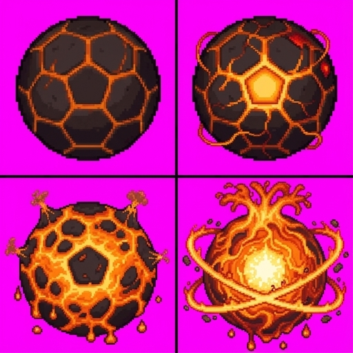

시트 원본

왼쪽 위 +0 재현 · 오른쪽 위 +5 · 왼쪽 아래 +10 · 오른쪽 아래 +15후처리 결과 (같은 도트 밀도, 게임 필드 위, 크게)
도감에서 보이는 크기 (40px 행 썸네일 · 28px 단계 썸네일)
비교: 지금 게임에 확정되어 있는 +0 이미지
- +5 방금까지 타던 돌: 균열이 달아오르고 용암 줄기가 공을 감쌈. +10 갑각이 갈라져 용암 속이 드러나고 윗부분에 분화구 원뿔이 생기고 용암이 흘러내림. +15 용암이 흘러넘치는 덩어리가 되어 위로 솟고 고리가 공을 돎(공 본질이 흐려진 유체형).
- 공 본체는 네 칸이 같은 도트 크기가 되도록 줄였습니다. 칸 중심을 공 중심으로 잡아 게임에서 같은 자리에 겹쳐 쓸 수 있습니다.